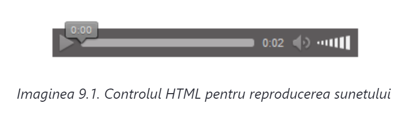
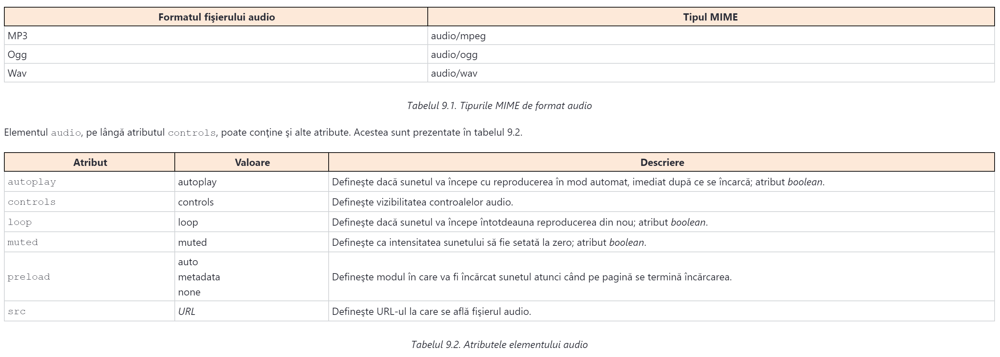
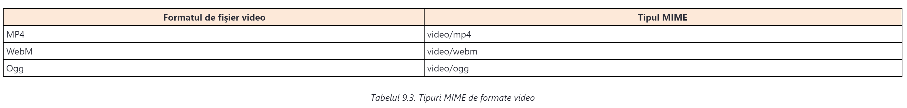

În etapele iniţiale ale web-ului, site-urile se foloseau, în primul rând, pentru prezentarea datelor de tip text. Vitezele de internet erau foarte mici, aşadar integrarea înregistrărilor audio şi video în documentele HTML era, practic, irealizabilă. Pe lângă aceasta, primele versiuni ale limbajului HTML nu aveau standarde care să asigure încorporarea înregistrărilor video sau audio într-o pagină HTML.
Cu timpul, viteza internetului a crescut, aşadar la începutul anilor 2000 au fost satisfăcute primele precondiţii tehnice pentru integrarea conţinuturilor multimedia în documentele HTML. Având în vedere că HTML încă nu a avut o soluţie originală pentru execuţia acestei operaţii, s-au dezvoltat numeroase tehnologii externe care au încercat să compenseze o astfel de lipsă. În primul rând, ne referim la Flash, dar şi la alte tehnologii similare, cum ar fi Silverlight, Java Applets, JavaFX etc. Totuşi, aceste tehnologii au avut şi numeroase dezavantaje. Au colaborat prost cu tehnologiile web existente, conţinutul lor era foarte greu de indexat şi reprezentau o sursă ideală pentru numeroase probleme de securitate, care erau foarte serioase. Prin urmare, a apărut nevoia de un mod standardizat de includere a înregistrărilor audio şi video în documentele HTML. Soluţia a apărut împreună cu versiunea HTML5 a limbajului, când sunt prezentate, pentru prima dată, elemente HTML special destinate integrării înregistrărilor audio şi video.
În specificaţia limbajului HTML5, pentru prima dată sunt integrate elemente cu ajutorul cărora este posibilă adăugarea înregistrărilor audio şi video în documentele HTML. Este vorba de următoarele elemente HTML:
Mai sus, am menţionat de mai multe ori noţiunea de integrare a înregistării audio sau video. Trebuie să ştiţi că nu este vorba de o integrare reală, deoarece fişierele audio şi video nu pot deveni parte componentă a documentului HTML. Am avut o situaţie identică şi în lecţia anterioară, când am vorbit de imagini. Pur şi simplu, imaginile, înregistrările audio şi video nu se integrează literalmente în documentele HTML propriu-zise. Fişierele prin care sunt prezentate acestea există ca unităţi independente, în timp ce în documentele HTML, prin folosirea elementelor img, audio sau video, definim doar în ce mod vor fi afişate în cadrul documentelor HTML
Pe lângă noile elemente HTML pentru integrarea înregistrărilor audio şi video, versiunea limbajului HTML5 a adus şi o noutate în domeniul gestionării programabile a unui astfel de conţinut. Este vorba de un set complet nou de funcţionalităţi JavaScript care se pot folosi pentru controlul conţinutului audio şi video.
În continuarea acestei lecţii, desigur, nu ne vom ocupa cu utilizarea limbajului JavaScript şi a conceptelor avansate pentru controlul înregistrărilor audio şi video, ci vom ilustra utilizarea de bază a tagurilor HTML audio şi video.
Limbajul HTML5 a mutat semnificativ barierele când vine vorba de lucrul cu sunetul. Înainte de HTML5, nu exista un standard pentru reproducerea fişierelor audio în cadrul documentului HTML, iar singurul mod de a obţine aşa ceva era utilizarea plugin-urilor, cum ar fi Flash.
HTML5 susţine reproducerea pentru trei formate audio, şi anume:
Pentru adăugarea sunetului în documentul HTML, se foloseşte elementul audio. Următorul exemplu ilustrează utilizarea acestui element:
<audio controls>
<source src="jingle.ogg" type="audio/ogg">
<source src="jingle.mp3" type="audio/mpeg">
Your browser does not support the audio element.
</audio>
HTML-ul prezentat pe pagină produce un efect identic celui din imaginea 9.1.
În imaginea 9.1. se poate observa că browserul a randat elementul audio ca un player cu controale de reproducere. Controalele se află aici, deoarece pe elementul audio este setat atributul controls. În caz contrar, controalele nu ar fi fost vizibile.
Atributul controls tocmai prezentat este unul dintre aşa-numitele atribute boolean. Noţiunea de boolean se foloseşte deseori în programare pentru marcarea datelor, care pot avea două valori: adevărat şi fals sau activat şi dezactivat (engl. on, off). Atributele boolean HTML se pot observa ca un fel de comutator. În exemplul prezentat, un astfel de comutator este atributul controls, care activează controalele pe player pentru ascultarea înregistrării audio.
Starea adevărată (activată) a atributului boolean în limbajul HTML se poate prezenta în trei moduri diferite. Forma completă de specificare a stării activate, în exemplul atributului boolean controls deja văzut, arată chiar aşa:
controls="controls"
Forma completă de specificare a atributului boolean presupune definirea denumirii acestuia ca valoare.
A doua formă de specificare a atributului boolean permite utilizarea unei valori text goale:
controls=""
În cele din urmă, valoarea adevărată se poate prezenta ca în exemplu - prin specificarea denumirii atributului fără valoare. O astfel de formă se numeşte formă prescurtată:
controls
Toate cele trei exemple produc un efect identic, care ca rezultat are definirea atributului boolean cu valoarea adevărată (on).
Valoarea falsă (off) a atributului boolean se defineşte prin lipsa lui. Luând în considerare exemplul prezentat, dacă pe elementul audio nu se specifică atributul controls, se va considera că el este în starea dezactivată (off), aşadar nici controalele nu vor fi afişate.
Atributul controls nu este singurul atribut boolean pe care îl cunoaşte limbajul HTML. Pe lângă el, alte atribute importante ale acestui tip sunt şi checked, disabled, required, selected, autoplay...
Identic cu modul de lucru cu imaginile, nici fişierele audio nu se integrează direct în documentul HTML, ci în cadrul documentului se introduce doar un link către ele. Aceasta se obţine prin folosirea elementului source. În exemplu sunt definite două elemente de acest tip, iar browserul va reproduce primul fişier al cărui format îl susţine.
Dacă se întâmplă ca browserul să nu aibă posibilitatea de reproducere a sunetului în cadrul documentului HTML, utilizatorului îi va fi afişat textul definit în cadrul tagurilor . În exemplu, acesta este textul Your browser does not support the audio element.
În timpul introducerii linkului către fişierul audio, se specifică şi tipul său, utilizând atributul type. Ca valoare a acestui atribut, se introduce tipul MIME, iar formatele audio pe care le susţine elementul, precum şi tipurile MIME aparţinătoare, sunt prezentate în tabelul 9.1.
Atributele autoplay, controls, loop şi muted sunt atribute de tip boolean. Din tabelul 9.2. se poate vedea că elementul audio poate conţine şi atributul src, prin care se evită obligaţia de definire a elementelor source individuale. În acest fel, exemplul prezentat se poate modifica:
<audio controls src="link-song.ogg">
Your browser does not support the audio element.
</audio>
Aşa cum era cazul cu reproducerea fişierelor audio, înainte de apariţia limbajului HTML5, nu exista un standard nici pentru reproducerea fişierelor video în cadrul documentelor HTML. Limbajul HTML5 introduce un element video care asigură acest lucru.
În cadrul documentului HTML se pot reproduce fişiere video în trei formate diferite:
După cum am spus deja, reproducerea fişierelor video în cadrul documentului HTML se poate efectua prin utilizarea elementelor video. Următorul exemplu ilustrează utilizarea acestui element:
<video width="960" controls>
<source src="video.mp4" type="video/mp4">
<source src="video.webm" type="video/webm">
Your browser does not support HTML5 video.
</video>
Utilizarea elementului video este foarte similară utilizării elementului pentru reproducerea fişierelor audio. Prin atributul controls, se activează afişarea controalelor de reproducere. Fişierul video se leagă prin link de document prin folosirea elementului sursă. În timpul definirii locaţiei la care se găseşte fişierul video, se defineşte denumirea tipului MIME. Aceste denumiri sunt prezentate în tabelul 9.3.
Tag-ul video poate conţine toate aceste atribute pe care le cunoaşte şi tag-ul audio. Atributul caracteristic elementului video este atributul poster, prin care se poate defini URL-ul la care se găseşte imaginea care va fi afişată în timpul încărcării materialului video sau înainte de pornirea acestuia.